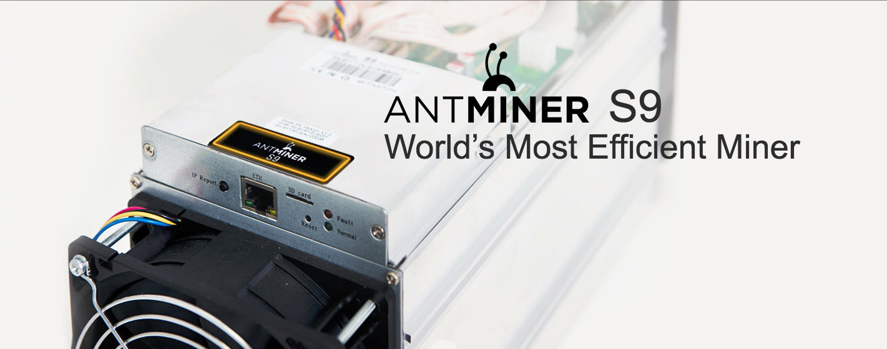
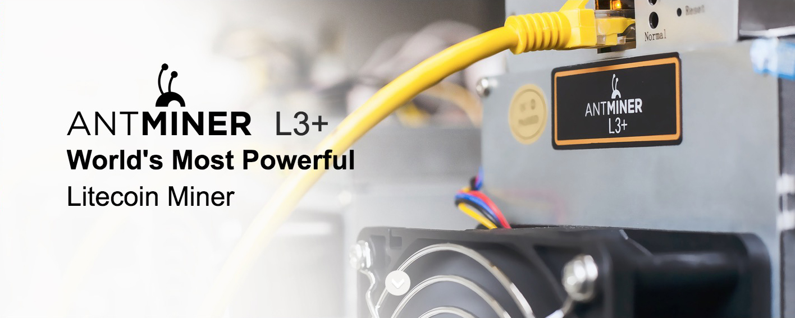

<?xml version="1.0" encoding="UTF-8"?><rss version="2.0"
	xmlns:content="http://purl.org/rss/1.0/modules/content/"
	xmlns:wfw="http://wellformedweb.org/CommentAPI/"
	xmlns:dc="http://purl.org/dc/elements/1.1/"
	xmlns:atom="http://www.w3.org/2005/Atom"
	xmlns:sy="http://purl.org/rss/1.0/modules/syndication/"
	xmlns:slash="http://purl.org/rss/1.0/modules/slash/"
	>

<channel>
	<title>antminer &#8211; Discount Miners</title>
	<atom:link href="https://discountminers.com/product-tag/antminer/feed/" rel="self" type="application/rss+xml" />
	<link>https://discountminers.com</link>
	<description>Discount on the Antminer S9</description>
	<lastBuildDate>Sat, 23 Dec 2017 17:00:48 +0000</lastBuildDate>
	<language>en-US</language>
	<sy:updatePeriod>hourly</sy:updatePeriod>
	<sy:updateFrequency>1</sy:updateFrequency>
	
	<item>
		<title>Antminer S9 14TH/s Bitcoin Miner (February 21-28th Batch) FREE SHIPPING!</title>
		<link>https://discountminers.com/product/antminer-s9-14th-s-bitcoin-miner-bitcoin-miner-february-batch-free-shipping/</link>
		<comments>https://discountminers.com/product/antminer-s9-14th-s-bitcoin-miner-bitcoin-miner-february-batch-free-shipping/#respond</comments>
		<pubDate>Tue, 05 Dec 2017 20:20:56 +0000</pubDate>
		<dc:creator><![CDATA[dminers]]></dc:creator>
		
		<guid isPermaLink="false">https://discountminers.com/?post_type=product&#038;p=1350</guid>
		<description><![CDATA[<p>Antminer S9 - The world’s most efficient miner and world's first bitcoin mining ASIC based on the 16nm process node.</p>
<p>The post <a rel="nofollow" href="../../../product/antminer-s9-14th-s-bitcoin-miner-bitcoin-miner-february-batch-free-shipping/index.html">Antminer S9 14TH/s &lt;b&gt;Bitcoin Miner&lt;/b&gt; &lt;b/&gt;(February 21-28th Batch)&lt;/b&gt; FREE SHIPPING!</a> appeared first on <a rel="nofollow" href="../../../index.html">Discount Miners</a>.</p>
]]></description>
				<content:encoded><![CDATA[<p></p>
<p>&nbsp;</p>
<p><em>Power Supply Not Included</em></p>
<p>Antminer S9 &#8211; The world’s most efficient miner and world&#8217;s first bitcoin mining ASIC based on the 16nm process node.</p>
<p>The Antminer S9 follows the same form factor as that of the hugely popular Antminer S7 and is nearly the same size. Yet it has more than thrice the power and twice the efficiency of the S7. Each Antminer S9 employs 189 such chips to deliver more hashrate and efficiency than any bitcoin miner ever made.</p>
<p>The post <a rel="nofollow" href="../../../product/antminer-s9-14th-s-bitcoin-miner-bitcoin-miner-february-batch-free-shipping/index.html">Antminer S9 14TH/s &lt;b&gt;Bitcoin Miner&lt;/b&gt; &lt;b/&gt;(February 21-28th Batch)&lt;/b&gt; FREE SHIPPING!</a> appeared first on <a rel="nofollow" href="../../../index.html">Discount Miners</a>.</p>
]]></content:encoded>
			<wfw:commentRss>https://discountminers.com/product/antminer-s9-14th-s-bitcoin-miner-bitcoin-miner-february-batch-free-shipping/feed/</wfw:commentRss>
		<slash:comments>0</slash:comments>
		</item>
		<item>
		<title>Antminer S9 &#8211; L3+ Fan Duct Cooling Shroud (4 in)</title>
		<link>https://discountminers.com/product/antminer-s7-s9-d3-l3-fan-duct-cooling-shroud-4/</link>
		<comments>https://discountminers.com/product/antminer-s7-s9-d3-l3-fan-duct-cooling-shroud-4/#respond</comments>
		<pubDate>Mon, 30 Oct 2017 22:30:14 +0000</pubDate>
		<dc:creator><![CDATA[dminers]]></dc:creator>
		
		<guid isPermaLink="false">https://discountminers.com/?post_type=product&#038;p=367</guid>
		<description><![CDATA[<p>Antminer S1 S3 S5 S7 S9 T9 D3 L3+ Fan Duct Cooling Shroud to 4 Inch Vent</p>
<p>The post <a rel="nofollow" href="../../../product/antminer-s7-s9-d3-l3-fan-duct-cooling-shroud-4/index.html">Antminer S9 &#8211; L3+ Fan Duct Cooling Shroud (4 in)</a> appeared first on <a rel="nofollow" href="../../../index.html">Discount Miners</a>.</p>
]]></description>
				<content:encoded><![CDATA[<h3><span style="font-family: Arial Black; font-size: xx-large;">Antminer S1 S3 S5 S7 S9 T9 D3 L3+ </span><span style="font-family: Arial Black; font-size: xx-large;">Fan Duct Cooling Shroud to 4 Inch Vent</span></h3>
<h3>120MM Fan to 4 Inch Duct</h3>
<ul>
<li>Reduces noise</li>
<li>Keep that Antminer running cooler for longer life of the components &#8211; protect your investment that is making you money!</li>
<li><b>Use the existing screws in your Antminer to connect. </b></li>
<li>This duct can be used on any standard 120MM Fan!</li>
</ul>
<p>&nbsp;</p>
<p>The post <a rel="nofollow" href="../../../product/antminer-s7-s9-d3-l3-fan-duct-cooling-shroud-4/index.html">Antminer S9 &#8211; L3+ Fan Duct Cooling Shroud (4 in)</a> appeared first on <a rel="nofollow" href="../../../index.html">Discount Miners</a>.</p>
]]></content:encoded>
			<wfw:commentRss>https://discountminers.com/product/antminer-s7-s9-d3-l3-fan-duct-cooling-shroud-4/feed/</wfw:commentRss>
		<slash:comments>0</slash:comments>
		</item>
		<item>
		<title>APW3 Power Supply</title>
		<link>https://discountminers.com/product/apw3-power-supply/</link>
		<comments>https://discountminers.com/product/apw3-power-supply/#respond</comments>
		<pubDate>Wed, 25 Oct 2017 14:49:41 +0000</pubDate>
		<dc:creator><![CDATA[dminers]]></dc:creator>
		
		<guid isPermaLink="false">https://discountminers.com/?post_type=product&#038;p=291</guid>
		<description><![CDATA[<p>Original AntMiner APW3++ PSU 1600W Power Supply for Antminer D3 S9 / L3 In Stock 100V-240V Mining</p>
<p>The post <a rel="nofollow" href="../../../product/apw3-power-supply/index.html">APW3 Power Supply</a> appeared first on <a rel="nofollow" href="../../../index.html">Discount Miners</a>.</p>
]]></description>
				<content:encoded><![CDATA[<p><strong>Original AntMiner APW3++ PSU 1600W Power Supply for Antminer D3 S9 / L3 In Stock 100V-240V Mining</strong></p>
<p><strong>Package includes:</strong></p>
<p>1 x APW3 power supply for Antminer S9 L3</p>
<p><strong>Features:</strong></p>
<p>1. The APW3++ can deliver a maximum power of only 1200W if it is connected to a 110V mains power supply. To obtain the rated power of 1600W, the APW3++ must be connected to a 220-240V mains power supply. Please check the mains power supply that is the standard in your region before ordering.<br />
2. This batch of PSU comes with only 10 PCIe connectors so cannot be used with more than one Antminer L3+ miner.</p>
<p>&nbsp;</p>
<p>The post <a rel="nofollow" href="../../../product/apw3-power-supply/index.html">APW3 Power Supply</a> appeared first on <a rel="nofollow" href="../../../index.html">Discount Miners</a>.</p>
]]></content:encoded>
			<wfw:commentRss>https://discountminers.com/product/apw3-power-supply/feed/</wfw:commentRss>
		<slash:comments>0</slash:comments>
		</item>
		<item>
		<title>Antminer L3+ Litecoin Miner (March 1 Batch)</title>
		<link>https://discountminers.com/product/antminer-l3-litecoin-miner/</link>
		<comments>https://discountminers.com/product/antminer-l3-litecoin-miner/#respond</comments>
		<pubDate>Wed, 25 Oct 2017 14:30:33 +0000</pubDate>
		<dc:creator><![CDATA[dminers]]></dc:creator>
		
		<guid isPermaLink="false">https://discountminers.com/?post_type=product&#038;p=281</guid>
		<description><![CDATA[<p>The Antminer L3+ is the most powerful Litecoin miner on the market at 504 MH/s.</p>
<p>The post <a rel="nofollow" href="../../../product/antminer-l3-litecoin-miner/index.html">Antminer L3+ &lt;b&gt;Litecoin&lt;/b&gt; Miner &lt;b&gt;(March 1 Batch)&lt;/b&gt;</a> appeared first on <a rel="nofollow" href="../../../index.html">Discount Miners</a>.</p>
]]></description>
				<content:encoded><![CDATA[<p></p>
<h3><span style="color: #ff0000;">NOW TAKING PRE-ORDERS</span></h3>
<p><strong>The Antminer L3+ is the most powerful Litecoin miner on the market at 504 MH/s.</strong></p>
<p><em>Power Supply NOT Included</em></p>
<p>Power supply unit is <strong>not included</strong>. You will need an ATX PSU with at least 9 six-pin PCIE connectors. There are 2 PCI-e connectors for +12V DC input on each hashing board and both need to be connected to the PSU for the hashing board to operate. <strong>Do not connect more than one PSU to the same hashing board</strong>.</p>
<p>Recommends the APW3+ power supplyfor the L3+ miner. <strong>We do not recommend the use of one APW3+ PSU to power more than one Antminer L3+</strong>. Separate power supply to control board: there is one additional 6pin PCI-e connector on the IO board which must be connected to the PSU to get power. Be sure to power on the miner <strong>only after</strong> all the 9 PCIE connectors are connected to power supply.</p>
<p>&nbsp;</p>
<p>The post <a rel="nofollow" href="../../../product/antminer-l3-litecoin-miner/index.html">Antminer L3+ &lt;b&gt;Litecoin&lt;/b&gt; Miner &lt;b&gt;(March 1 Batch)&lt;/b&gt;</a> appeared first on <a rel="nofollow" href="../../../index.html">Discount Miners</a>.</p>
]]></content:encoded>
			<wfw:commentRss>https://discountminers.com/product/antminer-l3-litecoin-miner/feed/</wfw:commentRss>
		<slash:comments>0</slash:comments>
		</item>
	</channel>
</rss>

<!-- Localized -->